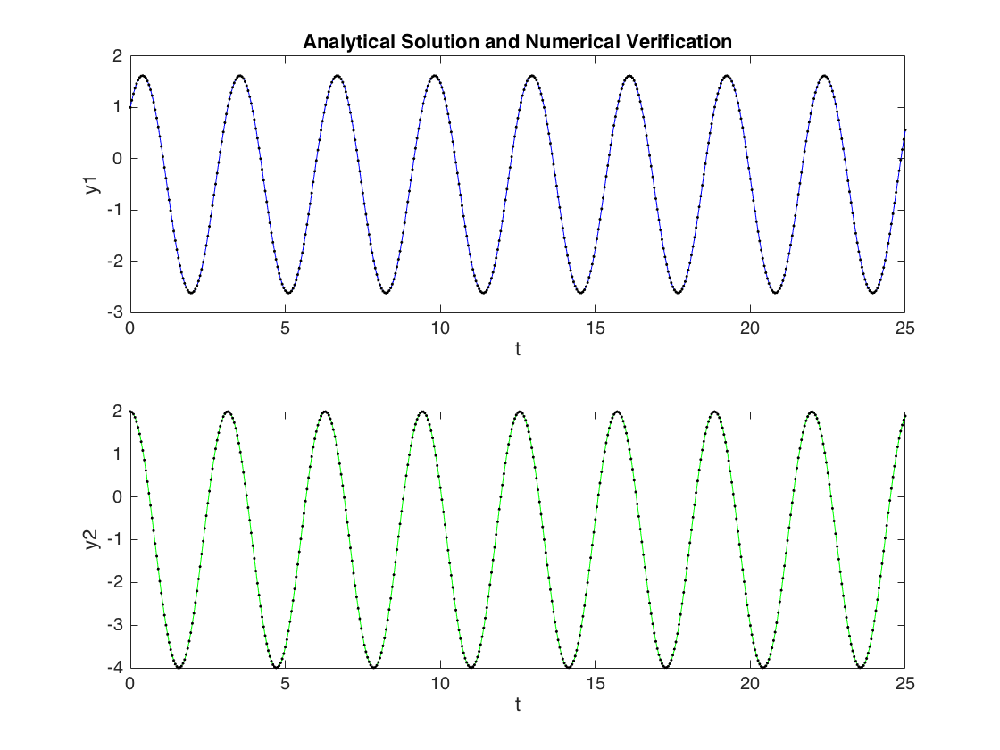
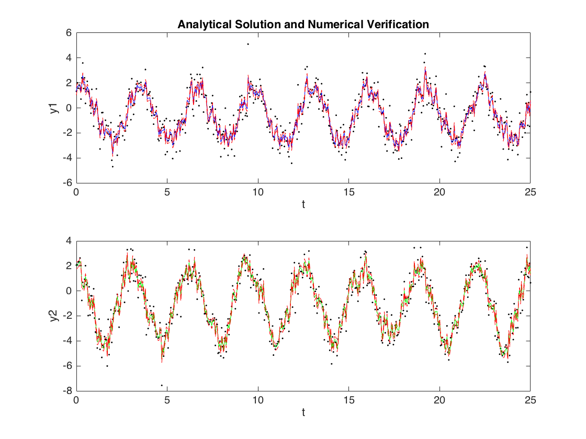

Contents
function [] = KalFilt_LinSys
close all
clear
addpath('/Users/avivbachan/Google_Drive/Software/MATLAB/ekfukfToolbox')
This system is simple enough that it has an analytical solution
t = linspace(0,25,501);
dt = t(2) - t(1);
[t, yan1, yan2] = analyticalSolution(t);
F = [-2, 2; -4, 2];
U = [1;0];
y0 = [1;2];
[t, ynum1, ynum2] = numericalSolution(t,F,U,y0);
figure('Name','Analytical Solution and Numerical Verification')
subplot 211
plot(t, yan1,'b-',t,ynum1,'k.')
xlabel('t')
ylabel('y1')
title('Analytical Solution and Numerical Verification')
subplot 212
plot(t,yan2,'g-',t,ynum2,'k.')
xlabel('t')
ylabel('y2')

Make some synthetic data by adding noise to the analytical solution
y1 = yan1 + randn(1,length(yan1));
y2 = yan2 + randn(1,length(yan2));
Y = [y1;y2];
Now for kalman filtering
[A,Q] = lti_disc(F,[],1,dt);
m = y0;
P = eye(2);
H = eye(2);
R = 0.1*eye(2);
MM = zeros(size(m,1), size(Y,2));
PP = zeros(size(m,1), size(Y,2));
for i = 1:size(Y,2)
[m,P] = kf_predict(m,P,A,Q,[],U*dt);
[m,P] = kf_update(m,P,Y(:,i),H,R);
MM(:,i) = m;
PP(:,i) = diag(chol(P));
end
yfilt1 = MM(1,:);
yfilt2 = MM(2,:);
sigmaFilt1 = PP(1,:);
sigmaFilt2 = PP(2,:);
figure('Name','Noisy Data and Filter Solution')
subplot 211
plot(t, y1,'k.',t,yfilt1,'b-')
hold on
plot(t, yfilt1-sigmaFilt1,'r--')
plot(t, yfilt1+sigmaFilt1,'r--')
xlabel('t')
ylabel('y1')
title('Analytical Solution and Numerical Verification')
subplot 212
plot(t,y2,'k.',t,yfilt2,'g-')
hold on
plot(t, yfilt2+sigmaFilt2,'r--')
plot(t, yfilt2-sigmaFilt2,'r--')
xlabel('t')
ylabel('y2')

end
function [t, yan1, yan2] = analyticalSolution(t)
Analytical solution
yan1 = (3*sin(2*t) + 3*cos(2*t) -1)/2;
yan2 = 3*cos(2*t) - 1;
end
function [t, ynum1, ynum2] = numericalSolution(t,F,u,y0)
Numerical solution
odefun = @(t,y) F*y+u;
[~,Y] = ode45(odefun, t, y0);
ynum1 = Y(:,1);
ynum2 = Y(:,2);
end